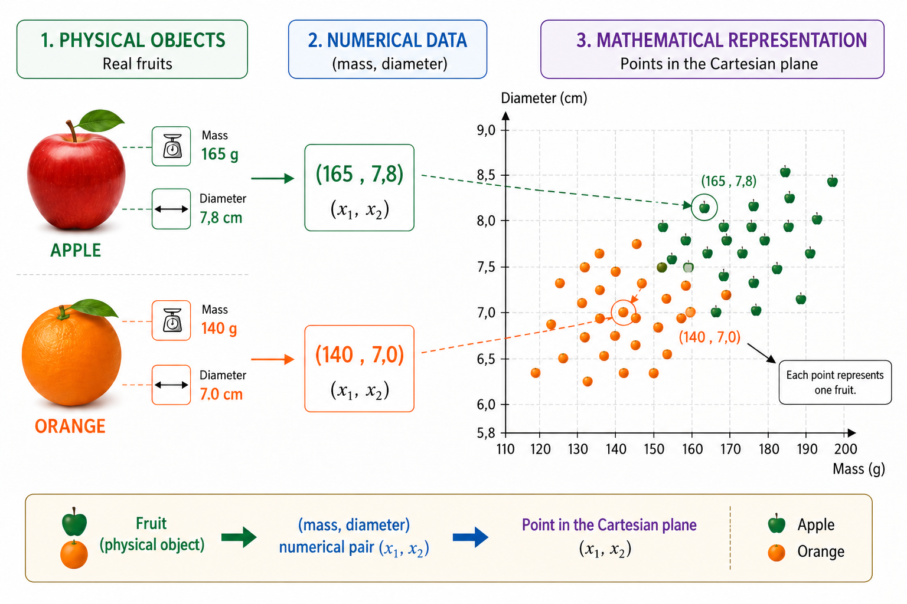
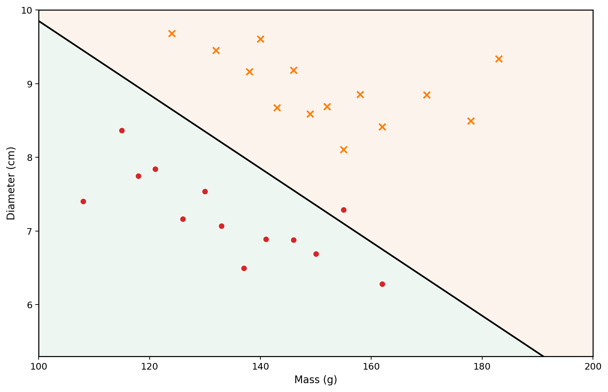
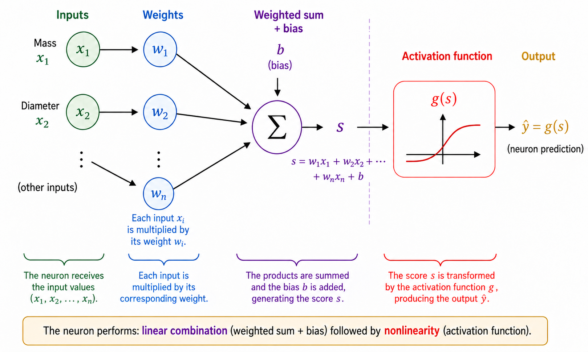
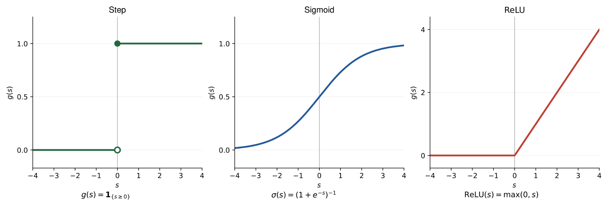
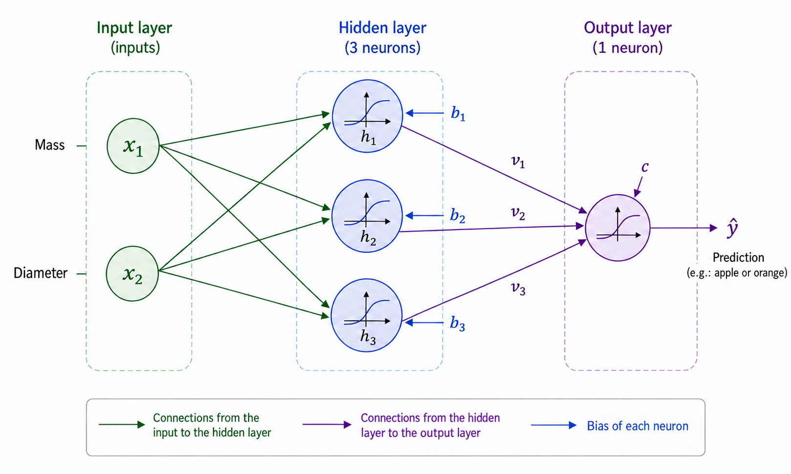
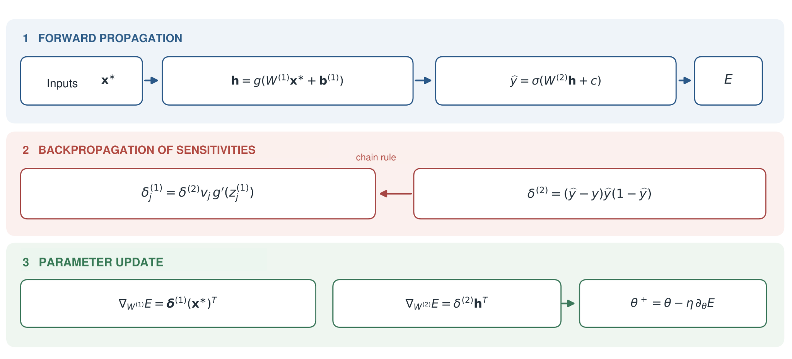
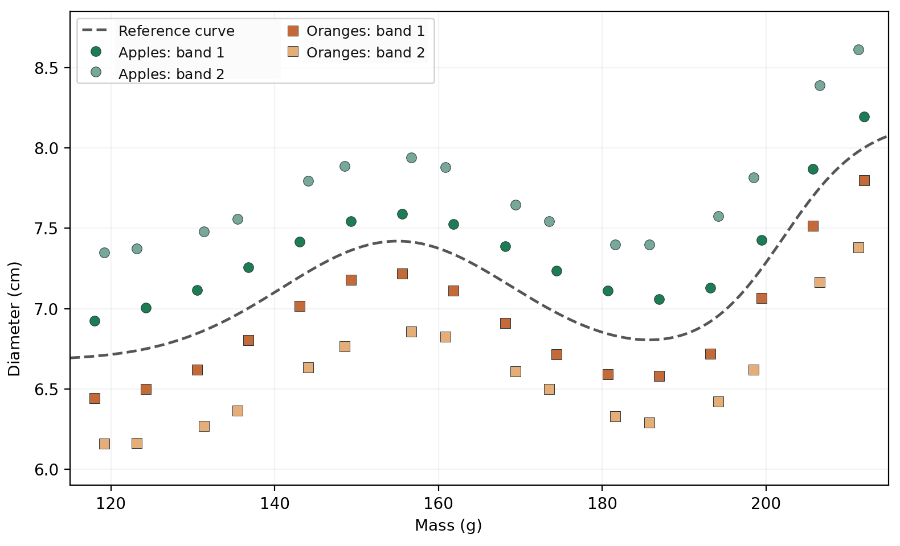
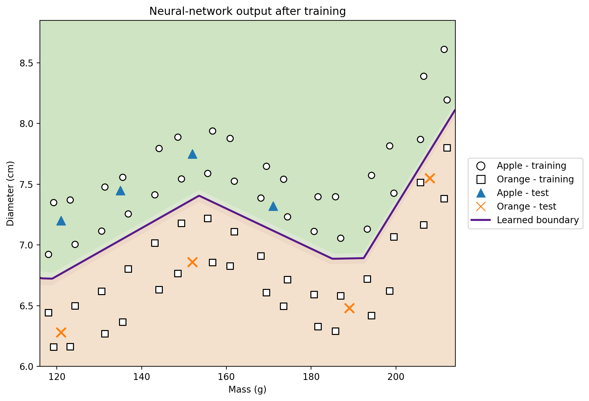

When can a computer learn?
In everyday life, we make classification decisions almost without noticing. By looking at a fruit, we quickly identify it as an apple or an orange; when a message arrives on a phone, we distinguish a legitimate conversation from unwanted advertising; in medical analysis, several measurements may be combined to support a decision; and in financial institutions, multiple pieces of information are evaluated before credit is granted. In all these examples, several characteristics are considered together to produce a response.
In many traditional computer programs, the rules that produce this response are written explicitly by the programmer. This approach works well when the rules are known and can be stated clearly. It becomes less effective when the data are highly variable or when it is difficult to formulate in advance every condition required for a good decision. This leads to a natural question:
Can we build a program that learns a decision rule from
examples instead of receiving the rule in advance?
This is one of the central ideas of machine learning, an area of artificial intelligence concerned with methods that fit models from data . In a supervised-learning problem, the algorithm receives examples together with their correct answers, and we seek a model that can also make useful predictions for cases that were not used during training. Among the many models developed for this purpose, artificial neural networks have become important in applications such as image recognition, language processing, signal analysis, and time-series prediction .
The use of neural networks as a bridge among mathematics, computation, and school education has already been discussed in Professor de Matemática Online by Batista and Martins , who present an activity involving teacher education, Python, and digit recognition. The present article follows a complementary route. Our main goal is to expose the internal mathematics of a small neural network, beginning with analytic geometry and proceeding step by step to gradient computation and a manual implementation of backpropagation.
Despite the sophistication of modern applications, the mathematical core of a neural network can be introduced using relatively familiar ideas. At a basic level, a neural network is a composition of functions whose parameters are adjusted from data. We begin with a simple geometric problem, reinterpret a separating line as an artificial neuron, connect several neurons, study the role of activation functions, and show how derivatives can be used to adjust the network parameters automatically. We then implement a complete small example in Python, keeping a direct correspondence between the equations and the code.
Representing the problem mathematically
To understand how a neural network works, we begin with a deliberately simple problem: distinguishing apples from oranges. A fruit has many characteristics that could be useful for this task, such as color, mass, diameter, texture, and aroma. An initial mathematical model, however, does not need to include all this complexity. We will use only two easily measured quantities: mass, in grams, and diameter, in centimeters.
Each fruit will therefore be represented by an ordered pair \[(x_1,x_2),\] where \[x_1=\text{mass} \qquad\text{and}\qquad x_2=\text{diameter}.\]
Thus, the pair \((155,\;7.2)\) represents a fruit with mass \(155\) g and diameter \(7.2\) cm. By replacing the physical object with two numerical measurements, we associate each fruit with a point in the Cartesian plane: the first coordinate gives its mass and the second its diameter. Figure 1 illustrates this representation for a hypothetical set of apples and oranges.

This transformation changes the apparent nature of the problem. Instead of asking directly how to recognize an apple or an orange, we can ask a geometric question: how can the points belonging to the two classes be separated in the plane? This change of viewpoint is fundamental in machine learning. Images, texts, sounds, and experimental signals must all be converted into numerical representations before they can be processed by an algorithm. In our example, each object has only two coordinates; in real applications, a representation may contain hundreds, thousands, or even millions of components. The principle is the same: each example is associated with a collection of numbers, and the model seeks a rule that maps that representation to the desired answer.
We start with the simplest geometric rule available and ask whether a single straight line can adequately separate the apple points from the orange points.
A straight line as a classifier
Once each fruit has been represented by a point in the Cartesian plane, classification becomes a geometric problem: can a straight line separate the apples from the oranges? This question captures the basic idea of an important family of machine-learning methods known as linear classifiers.
Consider a line crossing the data cloud, as illustrated in Figure 2. The line divides the plane into two half-planes. If most apple points lie on one side and most orange points lie on the other, the position of a new fruit relative to the line can be used as a classification rule. After measuring its mass and diameter, we represent the fruit by a point and determine which side of the line contains that point.

In the Cartesian plane \((x_1,x_2)\), a line can be described by \[w_1x_1+w_2x_2+b=0, \qquad (w_1,w_2)\neq(0,0).\]
The vector \((w_1,w_2)\) is perpendicular to the line and therefore determines its orientation, while the parameter \(b\) contributes to its position. This representation has a small redundancy: multiplying \(w_1\), \(w_2\), and \(b\) by the same nonzero constant produces exactly the same line. Hence, the parameters describing the boundary are not unique. Their numerical interpretation also depends on the scale of the variables. Since mass is measured in grams and diameter in centimeters, the numerical sizes of \(w_1\) and \(w_2\) should not be compared without accounting for the different units.
The line equation itself gives a simple way to determine on which side of the boundary a point lies. Define the score \[s(x_1,x_2)=w_1x_1+w_2x_2+b.\]
If \(s(x_1,x_2)=0\), the point lies on the line. If \(s(x_1,x_2)>0\), it lies in one half-plane; if \(s(x_1,x_2)<0\), it lies in the other. If we decide that positive scores correspond to apples and negative scores to oranges, the rule becomes \[\begin{cases} s(x_1,x_2)\geq 0 & \Longrightarrow \text{apple},\\ s(x_1,x_2)<0 & \Longrightarrow \text{orange}. \end{cases}\]
For example, consider the boundary defined by \[w_1=\frac{1}{10}, \qquad w_2=2, \qquad b=-30.\] For a fruit with mass \(160\) g and diameter \(7.8\) cm, \[\begin{aligned} s &=\frac{1}{10}\times160+2\times7.8-30\\ &=16+15.6-30\\ &=1.6. \end{aligned}\] Because the score is positive, the point lies in the half-plane that we associated with apples. This classifier would therefore label the fruit as an apple.
Not every choice of \(w_1\), \(w_2\), and \(b\) produces a good classification. Some lines separate the two groups poorly, whereas others make fewer errors. The learning problem is precisely to use previously labeled examples to determine parameter values that reduce a measure of model error. Instead of programming the line position directly, we want the algorithm to adjust its coefficients from the data.
A single line can work well when the classes are approximately linearly separable. More complicated data sets may require a nonlinear boundary. Before addressing that limitation, we reinterpret the classifier just constructed as an elementary computational unit: an artificial neuron.
The artificial neuron
In the previous section, the expression \[s=w_1x_1+w_2x_2+b\] was used to determine on which side of a line a fruit lies. The same expression can be viewed as the first stage of the computation performed by an artificial neuron. A neuron receives numerical inputs, combines them using weights and a bias, and then applies a mathematical function to obtain its output.
In our example, the inputs are the mass \(x_1\) and the diameter \(x_2\). Each input is multiplied by a parameter called a weight; the products are added together with a constant term \(b\), called the bias. Figure 3 shows this computation schematically.

The weights determine how changes in the inputs affect the score. If \(x_2\) and all other quantities are held fixed, a variation \(\Delta x_1\) changes \(s\) by \(w_1\Delta x_1\). Similarly, a variation \(\Delta x_2\) changes the score by \(w_2\Delta x_2\). The sign matters as well: a positive weight makes an increase in the input increase the score, whereas a negative weight produces the opposite effect. This interpretation must be used carefully when different variables have different units and scales. For this reason, practical implementations often normalize or standardize their input data before training.
The bias \(b\) is the constant term in the affine transformation. Geometrically, it allows the decision boundary to shift. If \(b=0\), the equation \[w_1x_1+w_2x_2=0\] forces the line to pass through the origin. With a bias, the boundary can move to other locations. Equivalently, when \(x_1=x_2=0\), the score is simply \(s=b\).
The score need not be the final neuron output. In general, an activation function \(g\) is applied to it: \[\widehat{y}=g(s)=g\left(w_1x_1+w_2x_2+b\right).\] Thus the computation has two stages, \[\begin{aligned} s &= w_1x_1+w_2x_2+b,\\[4pt] \widehat{y} &= g(s). \end{aligned}\]
Using the parameter values from the previous section gives \(s=1.6\). If we choose the step function \[g(s)= \begin{cases} 1, & s\geq0,\\ 0, & s<0, \end{cases}\] then \(\widehat{y}=g(1.6)=1\). Under our convention, the fruit is classified as an apple. With this activation, the decision changes when \(s\) crosses zero, so the class boundary is exactly \[w_1x_1+w_2x_2+b=0.\]
A single neuron is therefore a simple mathematical object with adjustable parameters. Its real importance comes from connecting many such units. Before constructing a network, however, we need to understand why the activation function is essential.
Why do we need an activation function?
A neuron first computes a score using an affine transformation and only then applies an activation function. This second stage is essential if a neural network is to represent complicated relations. To see why, imagine a network in which no activation functions are used. Every unit would then have the form \[y=w_1x_1+w_2x_2+b.\]
For a one-dimensional illustration, suppose a first unit produces \[h=ax+b\] and a second computes \[y=ch+d.\] Substitution gives \[y=c(ax+b)+d=acx+(cb+d),\] which is still an affine function of \(x\). The same statement holds in several dimensions: a composition of affine transformations is still affine. Therefore, adding many layers without a nonlinear operation does not make the network fundamentally more expressive; the entire composition could be replaced by a single affine transformation.
An activation function breaks this limitation. After computing the score \(s\), the neuron applies a usually nonlinear map \[h=g(s).\] When several such units are connected, the resulting composition can no longer be reduced to one affine transformation. This allows the network to construct more complicated decision boundaries.
The simplest activation is the step function, \[g(s)= \begin{cases} 1, & s\geq0,\\ 0, & s<0. \end{cases}\] It produces a binary decision and is very useful for understanding classification. Its derivative, however, is zero for \(s\neq0\) and undefined at \(s=0\). Since gradient-based training uses derivatives to determine how the parameters should change, the step function is not suitable for that training mechanism.
One alternative is the sigmoid function, \[\sigma(s)=\frac{1}{1+e^{-s}}.\] It maps every real number to a value strictly between \(0\) and \(1\). For very negative \(s\), the output approaches \(0\); for very positive \(s\), it approaches \(1\); between these extremes, the transition is smooth. The sigmoid is differentiable everywhere, with \[\sigma'(s)=\sigma(s)\bigl(1-\sigma(s)\bigr).\] Because its outputs lie between \(0\) and \(1\), it is often used in the output layer of a binary classifier. Under a probabilistic formulation with an appropriate loss function, the output can be interpreted as an estimate of the probability of the class represented by \(1\). In hidden layers, however, the sigmoid can create a difficulty: for inputs with large magnitude, its derivative becomes very small, contributing to the vanishing-gradient problem in deep networks.
A widely used hidden-layer activation is the ReLU (Rectified Linear Unit), \[\operatorname{ReLU}(s)=\max(0,s) = \begin{cases} 0, & s<0,\\ s, & s\geq0. \end{cases}\] Although it is composed of two linear pieces, ReLU is not globally linear. Its derivative is \(0\) for \(s<0\) and \(1\) for \(s>0\). At \(s=0\) the usual derivative does not exist, and software implementations adopt a convention for the gradient. For positive inputs, the derivative does not shrink as \(s\) grows, avoiding one of the saturation mechanisms of the sigmoid.
Figure 4 compares these three activations visually: the abrupt jump of the step function, the smooth sigmoid transition, and the change in slope of ReLU.

Their main properties are summarized below.
| Function | Output | Derivative | Typical use |
|---|---|---|---|
| Step | \(\{0,1\}\) | Zero for \(s\neq0\); undefined at \(s=0\) | Historical models and didactic examples |
| Sigmoid | \((0,1)\) | Exists for every \(s\) | Output layer in binary classification |
| ReLU | \([0,\infty)\) | \(0\) for \(s<0\) and \(1\) for \(s>0\) | Hidden layers |
The details of these functions differ, but their common conceptual role is to introduce nonlinearity. That nonlinearity is what allows the small network in the next section to represent relations that a single straight line cannot capture.
For readers who wish to go further, Haykin provides a classical treatment of neural networks, while Goodfellow, Bengio, and Courville discuss activation functions and deep-network training in a broader setting. Nielsen’s freely available text is especially accessible for developing intuition about neurons, activations, and learning.
Building a small neural network
We now consider a network with two inputs, one hidden layer containing three neurons, and one output neuron. The inputs remain \[x_1=\text{mass}, \qquad x_2=\text{diameter},\] and both are supplied to each hidden neuron, as shown in Figure 5.

Let the hidden-layer outputs be \(h_1\), \(h_2\), and \(h_3\). Each neuron receives the same two inputs but has its own weights and bias: \[\begin{aligned} h_1&=g\left(w_{11}x_1+w_{12}x_2+b_1\right),\\[4pt] h_2&=g\left(w_{21}x_1+w_{22}x_2+b_2\right),\\[4pt] h_3&=g\left(w_{31}x_1+w_{32}x_2+b_3\right). \end{aligned}\]
Although all three neurons receive the same mass and diameter, they can produce different responses because their parameters are different. During training, those parameters are adjusted so that the intermediate activations become useful for classification.
The three quantities \(h_1\), \(h_2\), and \(h_3\) are then passed to the output neuron, which computes \[s_{\mathrm{out}}=v_1h_1+v_2h_2+v_3h_3+c\] and produces \[\widehat{y}=g_{\mathrm{out}}\left(s_{\mathrm{out}}\right).\] For our binary problem, we use a sigmoid output: \[\widehat{y}=\sigma\left(v_1h_1+v_2h_2+v_3h_3+c\right), \qquad 0<\widehat{y}<1.\]
Using \(y=1\) for apple and \(y=0\) for orange, a threshold of \(0.5\) gives the class decision \[\widehat{y}\geq0.5 \Longrightarrow \text{apple}, \qquad \widehat{y}<0.5 \Longrightarrow \text{orange}.\] Values near \(1\) are therefore strongly associated with apples, while values near \(0\) are associated with oranges. As noted earlier, interpreting \(\widehat{y}\) numerically as a probability requires additional assumptions about the model and its training. For the classification rule used here, it is enough to regard \(\widehat{y}\) as a continuous network output.
The central feature of this architecture is the intermediate representation \[(x_1,x_2) \longrightarrow (h_1,h_2,h_3) \longrightarrow \widehat{y}.\] The network receives two features and constructs three new quantities before producing the final answer. These activations are not chosen manually: they depend on the weights and biases and therefore change as the parameters are trained.
Despite its small size, the network already has thirteen adjustable parameters. The three hidden neurons contain \[3(2+1)=9\] parameters, and the output neuron contributes \[3+1=4.\] Therefore, \[9+4=13.\]
The same count becomes transparent in matrix notation. Define \[\mathbf{x}= \begin{bmatrix} x_1\\x_2 \end{bmatrix}, \qquad W^{(1)}= \begin{bmatrix} w_{11}&w_{12}\\ w_{21}&w_{22}\\ w_{31}&w_{32} \end{bmatrix}, \qquad \mathbf{b}^{(1)}= \begin{bmatrix} b_1\\b_2\\b_3 \end{bmatrix}.\] Then the hidden layer can be written compactly as \[\mathbf{h}=g\left(W^{(1)}\mathbf{x}+\mathbf{b}^{(1)}\right),\] where \(g\) acts component by component. For the output, \[\widehat{y} = \sigma\left(W^{(2)}\mathbf{h}+b^{(2)}\right),\] with \[W^{(2)}= \begin{bmatrix} v_1&v_2&v_3 \end{bmatrix}.\]
This notation anticipates the structure that will appear in the Python program. When a fruit is presented at the input and we compute the successive activations until obtaining \(\widehat{y}\), we perform forward propagation or a forward pass. The central question remains: how can the thirteen parameters be determined automatically so that the predictions fit the data?
How does a neural network learn?
The network’s weights and biases are not known in advance: they are adjusted from examples with known class labels. Learning consists of repeating the forward pass, loss computation, gradient calculation, and parameter update (Figure 6). The essential point is that the chain rule lets us calculate how each weight and bias affects a small change in the loss.
To adjust the parameters, we first need a numerical measure of the discrepancy between a prediction and the expected answer. This is the loss function: it assigns a penalty to each prediction and enables comparisons between different choices of weights and biases. Unlike simply counting misclassifications, a continuous loss distinguishes predictions that are closer to or farther from the target label and provides derivatives that guide training.
Consider a fruit of mass \(140\) g and diameter \(7.0\) cm, identified as an orange (\(y=0\)). Denoting the network output by \(\widehat y\in(0,1)\), we use the squared loss for a single example: \[\label{eq:perda} E=\frac12(\widehat y-y)^2.\] Here \(y\) denotes the true class and \(\widehat y\) the prediction. The loss is nonnegative and approaches zero as \(\widehat y\) approaches the label \(y\); a greater difference \(|\widehat y-y|\) produces a greater penalty. For an orange, for example, predictions of \(0.80\) and \(0.60\) yield \(E=0.32\) and \(E=0.18\), respectively. Both misclassify the fruit as an apple at the threshold \(0.5\), but the loss distinguishes the prediction that is closer to the expected value. The factor \(1/2\) does not change the minimizer, but simplifies the derivative.
Because the network must learn from many examples rather than a single fruit, we combine the individual losses. For \(N\) observations, define the mean loss \[\label{eq:perda_media} J=\frac1N\sum_{i=1}^{N}E_i.\] This average summarizes performance on the training set and is the quantity we seek to reduce by adjusting the network parameters. Minimizing \(J\) does not, by itself, guarantee good predictions on new data; we return to this issue when discussing generalization. We retain [eq:perda] for the main derivation because of its algebraic simplicity. Later, we compare its gradient with that of binary cross-entropy without changing the computational experiment [2, 3].

If \(\theta\) denotes a weight or bias, the derivative \(\partial J/\partial\theta\) measures the local sensitivity of the mean loss to that parameter. A gradient descent step is \[\label{eq:descida} \theta_{\mathrm{new}}=\theta_{\mathrm{old}}-\eta\frac{\partial J}{\partial\theta},\qquad \eta>0.\] The learning rate \(\eta\) controls the step size: excessively small values may slow convergence, whereas excessively large values can lead to oscillation or divergence. When parameters are updated after each observation, as in the code of Section 8, \(\partial J/\partial\theta\) is replaced by \(\partial E_i/\partial\theta\). This is the form of stochastic gradient descent (SGD) adopted here.
The chain rule in the 2–3–1 network
We use the network of Figure 5, with ReLU in its three hidden neurons and a sigmoid at the output. Because the inputs represent mass (in grams) and diameter (in centimeters), their numerical scales differ. To prevent this difference of units from adversely affecting the conditioning of parameter fitting, we transform each feature according to \(x_j^{\ast}=(x_j-\mu_j)/\sigma_j\), where \(\mu_j\) and \(\sigma_j>0\) are the reference mean and standard deviation. This yields dimensionless inputs with comparable scales and facilitates the choice of optimization step size. During computational training, these statistics are obtained from the training set alone, preventing leakage from the test data. In the numerical example below, we use fixed centers and scales solely to simplify the arithmetic. For standardized inputs \(\mathbf{x}^{\ast}=(x_1^{\ast},x_2^{\ast})^{\mathsf T}\), the forward pass is \[\label{eq:forward} \begin{aligned} \mathbf{z}^{(1)}&=W^{(1)}\mathbf{x}^{\ast}+\mathbf{b}^{(1)}, &\mathbf{h}&=\operatorname{ReLU}(\mathbf{z}^{(1)}),\\ z^{(2)}&=W^{(2)}\mathbf{h}+c, &\widehat y&=\sigma(z^{(2)}). \end{aligned}\] Here \(c=b^{(2)}\) is the output bias and \(W^{(2)}=(v_1,v_2,v_3)\). Backpropagation begins at the output neuron, repeatedly applying the chain rule: \[\label{eq:delta_saida} \begin{aligned} \delta^{(2)}:=\frac{\partial E}{\partial z^{(2)}} &=\underbrace{\frac{\partial E}{\partial\widehat y}}_{\widehat y-y} \underbrace{\frac{\partial\widehat y}{\partial z^{(2)}}}_{\widehat y(1-\widehat y)} =(\widehat y-y)\widehat y(1-\widehat y),\\ \frac{\partial E}{\partial v_j}&=\delta^{(2)}h_j, \qquad \frac{\partial E}{\partial c}=\delta^{(2)}. \end{aligned}\] Because each activation \(h_j\) also depends on its weights and bias, we compute the sensitivities of the hidden neurons: \[\label{eq:delta_oculta} \begin{aligned} \delta_j^{(1)}:=\frac{\partial E}{\partial z_j^{(1)}} &=\delta^{(2)}v_j\,\operatorname{ReLU}'(z_j^{(1)}),\\ \frac{\partial E}{\partial w_{jk}} &=\delta_j^{(1)}x_k^{\ast},\qquad \frac{\partial E}{\partial b_j}=\delta_j^{(1)}. \end{aligned}\] ReLU is not differentiable at zero; when necessary, we adopt \(\operatorname{ReLU}'(0)=0\) as a computational convention. The quantities \(\delta^{(2)}\) and \(\delta_j^{(1)}\) are local loss sensitivities, not “physical errors” traveling through the network. The implementation reuses these quantities to calculate all thirteen gradients without differentiating afresh for each weight.
A complete numerical parameter update
For clarity, only in this example, we choose reference centers and scales of \(160\) g and \(20\) g for mass, and \(7.5\) cm and \(0.5\) cm for diameter. The fruit \((140\,\mathrm{g},7.0\,\mathrm{cm})\) therefore corresponds to the dimensionless input \[\label{eq:exemplo_entrada} \mathbf{x}^{\ast}=\begin{bmatrix}(140-160)/20\\(7.0-7.5)/0.5\end{bmatrix} =\begin{bmatrix}-1\\-1\end{bmatrix}.\] These reference values are fixed for this demonstration; in Section 8, the mean and standard deviation are computed directly from the training data.
Choose the thirteen initial parameters \[\label{eq:param_iniciais} W^{(1)}=\begin{bmatrix} 0.2&0.1\\-0.3&0.2\\0.1&-0.4 \end{bmatrix},\quad \mathbf{b}^{(1)}=\begin{bmatrix}\phantom{-}0.5\\\phantom{-}0.2\\-0.5\end{bmatrix},\quad W^{(2)}=\begin{bmatrix}\phantom{-}0.5&-0.4&\phantom{-}0.3\end{bmatrix},\quad c=1.\] Equation [eq:forward] successively gives \[\label{eq:exemplo_forward} \begin{gathered} \mathbf{z}^{(1)}=(0.2,\;0.3,\;-0.2)^{\mathsf T},\qquad \mathbf{h}=(0.2,\;0.3,\;0)^{\mathsf T},\\ z^{(2)}=0.5(0.2)-0.4(0.3)+1=0.98,\\ \widehat y=\sigma(0.98)\simeq0.727108,\qquad E\simeq0.264343. \end{gathered}\] The initial prediction gives the wrong class. From Equations [eq:delta_saida] and [eq:delta_oculta], \[\label{eq:exemplo_gradientes} \begin{gathered} \delta^{(2)}\simeq0.144274,\qquad \boldsymbol{\delta}^{(1)}\simeq(0.072137,\;-0.057710,\;0)^{\mathsf T},\\ \frac{\partial E}{\partial W^{(2)}}\simeq (0.028855,\;0.043282,\;0),\qquad \frac{\partial E}{\partial W^{(1)}}\simeq \begin{bmatrix}-0.072137&-0.072137\\\phantom{-}0.057710&\phantom{-}0.057710\\\phantom{-}0&\phantom{-}0\end{bmatrix}. \end{gathered}\] The third hidden neuron is inactive (\(z_3^{(1)}<0\)), so its incoming weights and bias have zero gradient in this step. With \(\eta=0.05\), apply \(\theta_{\mathrm{new}}=\theta_{\mathrm{old}}-0.05\,\partial E/\partial\theta\) simultaneously to all parameters. Table 1 lists a selection of the thirteen updates; the others follow the same formulas.
| Parameter \(\theta\) | Initial | \(\partial E/\partial\theta\) | Updated |
|---|---|---|---|
| \(v_1\) | \(0.500000\) | \(0.028855\) | \(0.498557\) |
| \(v_2\) | \(-0.400000\) | \(0.043282\) | \(-0.402164\) |
| \(c\) | \(1.000000\) | \(0.144274\) | \(0.992786\) |
| \(w_{11}\) | \(0.200000\) | \(-0.072137\) | \(0.203607\) |
| \(w_{21}\) | \(-0.300000\) | \(0.057710\) | \(-0.302885\) |
| \(b_1\) | \(0.500000\) | \(0.072137\) | \(0.496393\) |
| \(w_{31}\) | \(0.100000\) | \(0\) | \(0.100000\) |
A new forward pass using all updated parameters gives \(\widehat y_{\mathrm{new}}\simeq0.723717\) and \(E_{\mathrm{new}}\simeq0.261883\): the loss has decreased after a single step. The classification has not yet changed, as expected; learning requires repeating this process over many examples and epochs.
Squared error and cross-entropy
Squared error is convenient for making the chain rule explicit, but binary classification with sigmoid output also commonly uses binary cross-entropy. For \(y\in\{0,1\}\) and \(\widehat y=\sigma(z)\), the loss for an observation is \[\label{eq:entropia_cruzada} E_{\mathrm{CE}}=-y\ln\widehat y-(1-y)\ln(1-\widehat y).\] Whereas squared loss penalizes the numerical discrepancy between prediction and label, cross-entropy penalizes predictions assigning low probability to the observed label, interpreting \(\widehat y\) as the probability of class \(1\). The most important difference for training appears when differentiating with respect to the output neuron’s score \(z\). Applying the chain rule and using \(\sigma'(z)=\widehat y(1-\widehat y)\) gives \[\label{eq:derivada_entropia_cruzada} \begin{aligned} \frac{\partial E_{\mathrm{CE}}}{\partial z} &=\left(-\frac{y}{\widehat y}+\frac{1-y}{1-\widehat y}\right) \widehat y(1-\widehat y) =\widehat y-y,\\ \frac{\partial E_{\mathrm{SE}}}{\partial z} &=(\widehat y-y)\widehat y(1-\widehat y), \qquad E_{\mathrm{SE}}=\tfrac12(\widehat y-y)^2. \end{aligned}\]
To illustrate this difference alone, suppose an orange (\(y=0\)) receives the prediction \(\widehat y=0.80\). Then \(E_{\mathrm{SE}}=0.32\) and \(E_{\mathrm{CE}}=-\ln(0.20)\simeq 1.60944\), while the respective derivatives with respect to \(z\) are \(0.128\) and \(0.80\). At \(\eta=0.05\), the isolated update of the output bias, whose gradient is \(\partial E/\partial c=\partial E/\partial z\), would be \(\Delta c=-0.0064\) for squared error and \(\Delta c=-0.0400\) for cross-entropy. This illustrative prediction of \(0.80\) is not a replacement for the values computed in the preceding complete example.
Under cross-entropy, the factor \(\widehat y(1-\widehat y)\) no longer multiplies the output-layer sensitivity. This avoids, in that layer, gradient attenuation due to sigmoid saturation when a prediction is badly wrong. It neither eliminates small gradients in other layers nor guarantees faster training in every situation. Because the two losses have different scales, their numerical values should not be compared directly as measures of quality. We retain squared error in the main code so that the preceding parameter update remains fully reproducible; the supplementary notebook includes the comparison without changing training.
Epochs and generalization
A complete pass through the training observations is called an epoch. The implementation in the next section shuffles the examples in each epoch and updates the parameters after each fruit. The architecture stays fixed, but the weights, biases, and decision boundary change. Reducing the training loss does not guarantee satisfactory predictions on new observations. This ability is called generalization; when excessive fitting to training examples degrades predictions on unseen data, we have overfitting. In broader studies, separate training, validation, and test sets help select hyperparameters and evaluate the model with less bias [2, 3].
From mathematics to Python
We now implement, using only NumPy, the forward pass,
chain rule, and stochastic updates derived in Section 7 [4]. To obtain a nonlinear decision
boundary, we enlarge the hidden layer from three to twelve ReLU neurons.
The resulting \(2\)–\(12\)–\(1\)
network contains \(12(2+1)+(12+1)=49\)
parameters, but uses exactly the same equations.
Synthetic data for a demonstration
The experiment uses \(64\) synthetic training examples arranged in four bands of \(16\) points in the mass–diameter plane, together with eight additional observations for purely illustrative testing. Two apple bands lie above a reference curve and two orange bands below it. Small deterministic displacements prevent perfectly regular bands. The values were selected solely to produce a visually plausible distribution and a nonlinear decision boundary; they are not experimental measurements and do not constitute a physical model of fruit.
The reference curve is used only to generate examples. It is not given to the network, does not appear in the loss, and plays no part in backpropagation. Training uses only mass–diameter pairs and their class labels. The generating formula and displacements are documented in Appendix 9, enabling exact reproduction of the data in Figure 7.

Figure 7 shows the points actually
generated by construct_data(); the dashed curve is merely
part of the synthetic construction, not a learned boundary. The eight
additional examples are used only in the final illustration and do not
enter the computation of standardization statistics.
Standardization and training choices
Because mass and diameter have different units and scales, each input is converted to a dimensionless variable: \[\label{eq:padronizacao} x_j^{\ast}=\frac{x_j-\mu_j}{\sigma_j},\quad \mu_j=\frac1N\sum_{i=1}^N x_{ij},\quad \sigma_j=\sqrt{\frac1N\sum_{i=1}^N(x_{ij}-\mu_j)^2}.\] The mean \(\mu_j\) centers feature \(j\) and the standard deviation \(\sigma_j\) rescales it; here \(N=64\). Both statistics are computed only from the training data and then applied unchanged to test observations. The procedure assumes \(\sigma_j>0\). The same transformation is applied to the inputs and to the prediction grid.
The weights are initialized from a zero-mean normal distribution with
standard deviation \(0.1\) and random
seed \(42\). Small values break
symmetry between hidden neurons; a normal distribution is a simple
choice, not a universal prescription. For larger networks, the
initialization scale should reflect the architecture and activation
functions. The biases start at zero. At \(s=0\), ReLU has no derivative; the function
relu_derivative() adopts zero by convention, without
changing the mathematical definition of ReLU or, by itself, ensuring
convergence.
We use \(\eta=0.05\) as a conservative choice, not an optimal learning rate. A simple sensitivity check with fixed seed and data produces Table 2 after \(1000\) epochs. The largest rate tested converged more rapidly on this data set, but this observation does not establish its general suitability. We retain \(0.05\) because it provides stable training and an easily inspected loss history.
| \(\eta\) | Mean loss \(J\) | Correct out of \(64\) |
|---|---|---|
| \(0.005\) | \(0.041871\) | \(55\) |
| \(0.05\) | \(0.006485\) | \(64\) |
| \(0.2\) | \(0.000106\) | \(64\) |
Full Python implementation
The complete program is presented in Codes [cod:ambiente]–[cod:principal], organized by
function and in execution order. These ten consecutive blocks make up
the file neural_network.py, also supplied as supplementary
material.
Code –Environment setup
Code 1 — Imports and dependencies
"""Pedagogical example: fruit classification using a 2-12-1 network.
Dependencies: numpy and matplotlib. Run: python neural_network.py.
"""
import numpy as np
import matplotlib.pyplot as plt
from matplotlib.lines import Line2D
Code –ReLU activation
Code 2 — ReLU activation
def relu(s):
"""Hidden-layer activation: ReLU(s) = max(0,s)."""
return np.maximum(0, s)
Code –Computational ReLU derivative
Code 3 — ReLU derivative
def relu_derivative(s):
# ReLU is not differentiable at s=0; its computational derivative is set to 0.
# This convention only defines the backpropagation step at that point.
return (s > 0).astype(float)
Code –Sigmoid activation
Code 4 — Sigmoid activation
def sigmoid(s):
"""Output activation, with values between 0 and 1."""
return 1 / (1 + np.exp(-s))
Code –Auxiliary curve for data generation
Code 5 — Auxiliary reference curve
def reference_curve(m):
# Artificial curve (cm): offset + Gaussian bump + logistic rise.
# The constants were chosen to construct a nonlinear reference curve;
# they are neither experimental measurements nor fitted parameters.
return (6.68 + 0.74*np.exp(-((m-155)/20)**2)
+ 1.50/(1 + np.exp(-(m-202)/5)))
Code –Synthetic training and illustrative test observations
Code 6 — Synthetic training and test data
def construct_data():
# 16 masses in each of four bands: a1, a2, l1, l2.
masses_1 = np.linspace(118, 212, 16)
# Small deterministic offsets avoid identical masses.
masses_2 = masses_1 + np.array([
1.2, -1.1, 0.8, -1.3, 1.0, -0.8, 1.1, -1.0,
1.3, -0.9, 0.9, -1.2, 1.0, -1.0, 0.8, -0.7
])
k = np.arange(16)
# Apples: two bands above the curve, with small variations in cm.
a1 = np.column_stack([
masses_1,
reference_curve(masses_1) + 0.22 + 0.05*np.sin(0.8*k)
])
a2 = np.column_stack([
masses_2,
reference_curve(masses_2) + 0.58 + 0.06*np.cos(0.45*k)
])
# Oranges: two bands below the reference curve.
l1 = np.column_stack([
masses_1,
reference_curve(masses_1) - (0.22 + 0.04*np.cos(0.7*k))
])
l2 = np.column_stack([
masses_2,
reference_curve(masses_2) - (0.55 + 0.05*np.sin(0.5*k))
])
X_train = np.vstack([a1, a2, l1, l2])
y_train = np.array([1.0]*32 + [0.0]*32)
# Eight illustrative examples; not an extensive statistical test.
X_test = np.array([
[121.0, 7.20], [135.0, 7.45],
[152.0, 7.75], [171.0, 7.32],
[121.0, 6.28], [152.0, 6.86],
[189.0, 6.48], [208.0, 7.55]
])
y_test = np.array([1, 1, 1, 1, 0, 0, 0, 0], dtype=float)
return X_train, y_train, X_test, y_test
Code –Predictions from the forward pass
Code 7 — Prediction and standardization
def predict(X, mean, std, W1, b1, W2, b2):
# x_j^* = (x_j - mu_j)/sigma_j, using training-set statistics.
Xn = (X - mean) / std
# Forward pass in matrix notation (one row per fruit).
h = relu(Xn @ W1.T + b1)
return sigmoid(h @ W2 + b2)
Code –Training by backpropagation and gradient descent
Code 8 — Training with explicit backpropagation
def train(Xn, y_train, eta=0.05, n_epochs=6000, seed=42):
rng = np.random.default_rng(seed)
# Small random weights break symmetry between neurons;
# initial biases are zero. Scale 0.1 is a pedagogical choice.
W1 = 0.1 * rng.standard_normal((12, 2))
b1 = np.zeros(12)
W2 = 0.1 * rng.standard_normal(12)
b2 = 0.0
history = []
for epoch in range(n_epochs):
# SGD: one update per fruit, shuffled in every epoch.
for i in rng.permutation(len(Xn)):
x, target = Xn[i], y_train[i]
# Forward pass: hidden- and output-layer equations.
z1 = W1 @ x + b1
h = relu(z1)
z2 = W2 @ h + b2
y_hat = sigmoid(z2)
# Backpropagation: delta2 = dE/dz2 (squared error).
delta2 = (y_hat - target) * y_hat * (1 - y_hat)
dW2, db2 = delta2 * h, delta2
# delta1_j = delta2 * W2_j * ReLU'(z1_j).
delta1 = (delta2 * W2) * relu_derivative(z1)
dW1 = np.outer(delta1, x)
db1 = delta1
# Stochastic descent: theta <- theta - eta*dE/dtheta.
# All gradients use the PREVIOUS parameter values.
W1 -= eta * dW1
b1 -= eta * db1
W2 -= eta * dW2
b2 -= eta * db2
# J: mean training loss at the end of each epoch.
h_all = relu(Xn @ W1.T + b1)
y_pred = sigmoid(h_all @ W2 + b2)
history.append(np.mean(0.5 * (y_train - y_pred)**2))
return W1, b1, W2, b2, np.array(history)
Code –Plotting the learned decision boundary
Code 9 — Prediction visualization
def plot_results(X_train, y_train, X_test, y_test,
mean, std, W1, b1, W2, b2, save_path=None):
# Level set y_hat=0.5: LEARNED decision boundary.
masses = np.linspace(116, 214, 500)
diameters = np.linspace(6.0, 8.85, 500)
M, D = np.meshgrid(masses, diameters)
grid = np.column_stack([M.ravel(), D.ravel()])
P = predict(grid, mean, std, W1, b1, W2, b2).reshape(M.shape)
fig, ax = plt.subplots(figsize=(9.2, 6.3))
ax.contourf(M, D, P, levels=[0, 0.25, 0.50, 0.75, 1],
colors=['#f3e0cb', '#ecd5c4', '#dbe7cf', '#cde3bf'],
alpha=0.95)
ax.contour(M, D, P, levels=[0.5], colors=['#5a1a8a'],
linewidths=2.2)
mask = y_train == 1.0
ax.scatter(X_train[mask, 0], X_train[mask, 1], marker='o',
s=48, facecolors='white', edgecolors='black', linewidths=1.1)
mask = y_train == 0.0
ax.scatter(X_train[mask, 0], X_train[mask, 1], marker='s',
s=48, facecolors='white', edgecolors='black', linewidths=1.1)
mask = y_test == 1.0
ax.scatter(X_test[mask, 0], X_test[mask, 1], marker='^',
s=92, color='#1f77b4')
mask = y_test == 0.0
ax.scatter(X_test[mask, 0], X_test[mask, 1], marker='x',
s=110, color='#ff7f0e', linewidths=2.0)
ax.set_xlabel('Mass (g)')
ax.set_ylabel('Diameter (cm)')
ax.set_title('Neural-network output after training')
handles = [
Line2D([0], [0], marker='o', markersize=9, markerfacecolor='white',
markeredgecolor='black', linestyle='None',
label='Apple - training'),
Line2D([0], [0], marker='s', markersize=9, markerfacecolor='white',
markeredgecolor='black', linestyle='None',
label='Orange - training'),
Line2D([0], [0], marker='^', markersize=9, color='#1f77b4',
linestyle='None', label='Apple - test'),
Line2D([0], [0], marker='x', markersize=10, color='#ff7f0e',
linestyle='None', label='Orange - test'),
Line2D([0], [0], color='#5a1a8a', linewidth=2.2,
label='Learned boundary')
]
ax.legend(handles=handles, loc='center left',
bbox_to_anchor=(1.02, 0.5), frameon=True)
fig.tight_layout()
if save_path:
fig.savefig(save_path, dpi=200, bbox_inches='tight')
return fig, ax
Code –Running the experiment
Code 10 — Full program execution
if __name__ == '__main__':
X_train, y_train, X_test, y_test = construct_data()
mean, std = X_train.mean(axis=0), X_train.std(axis=0)
Xn = (X_train - mean) / std
W1, b1, W2, b2, history = train(Xn, y_train)
p_train = predict(X_train, mean, std, W1, b1, W2, b2)
p_test = predict(X_test, mean, std, W1, b1, W2, b2)
print('Final mean loss:', history[-1])
print('Correct training predictions:', np.sum((p_train >= 0.5) == y_train), '/64')
print('Correct illustrative test predictions:',
np.sum((p_test >= 0.5) == y_test), '/8')
plot_results(X_train, y_train, X_test, y_test,
mean, std, W1, b1, W2, b2)
plt.show()The function construct_data() (Code [cod:dados])
implements only the synthetic construction documented in Appendix 9; the auxiliary curve does not take
part in optimization. The function train() (Code [cod:treinamento]) implements the
forward pass, the calculation of \(\delta^{(2)}\) and \(\boldsymbol{\delta}^{(1)}\), gradients, and
four parameter updates corresponding to Equations [eq:forward], [eq:delta_saida], [eq:delta_oculta], and [eq:descida]. All gradients are computed
before modifying any parameter. The function plot_results()
(Code [cod:visualizacao]) plots the
learned result, not the curve used to construct the data.
The program is also provided as an independent Python file and an executable notebook to facilitate reproduction and adaptation.
After \(6000\) epochs with seed \(42\) and \(\eta=0.05\), the execution yields final mean loss \(J\simeq1.786\times10^{-4}\) and correctly classifies all \(64\) training observations and eight additional examples. This verifies the computational behavior on a synthetic example; it is not a statistical estimate of generalization performance. Figure 8 shows the learned boundary, the level set \(\widehat y=0.5\); circles and squares indicate training observations, while triangles and crosses indicate illustrative test examples.

We began the article with a straight line separating two simple sets of points and conclude with a richer computational example in which a winding boundary emerges from automatic parameter fitting. The implementation adds no mysterious ingredients to the mathematical ideas developed throughout: it organizes and repeatedly applies, at scale and at speed, linear combinations, activation functions, derivatives, matrix products, and gradient descent updates [3, 8].
The Python program and executable notebook accompany the supplementary files of this edition. The portal https://neuralmath.org provides related teaching resources.
Appendix A — Construction of the synthetic data set
The following expressions document only an ad hoc choice for generating data for the computational exercise. They do not belong to the network architecture, loss function, or training algorithm. No information about the auxiliary curve is used to update weights or biases.
For mass \(m\) entered numerically in grams, define an auxiliary diameter curve, in centimeters, by \[\label{eq:fronteira_base} d_0(m)=6.68+0.74\exp\!\left[-\left(\frac{m-155}{20}\right)^2\right] +\frac{1.50}{1+\exp[-(m-202)/5]}.\] The first term shifts the curve vertically; the second creates a rise near \(155\) g; and the third yields a smooth increase around \(202\) g. The coefficients were chosen for visual convenience, not fitted to fruit observations.
For \(k=0,\ldots,15\), let \(m_k=118+(212-118)k/15\), in grams. A second
set of masses is given by \(\widetilde
m_k=m_k+\varepsilon_k\), where the perturbations, in grams, are
\[\label{eq:deslocamentos}
(1.2,-1.1,0.8,-1.3,1.0,-0.8,1.1,-1.0,
1.3,-0.9,0.9,-1.2,1.0,-1.0,0.8,-0.7).\] The diameters of the four
bands are \[\label{eq:faixas}
\begin{aligned}
d_{a1,k}&=d_0(m_k)+0.22+0.05\sin(0.8k),\\
d_{a2,k}&=d_0(\widetilde m_k)+0.58+0.06\cos(0.45k),\\
d_{l1,k}&=d_0(m_k)-\bigl[0.22+0.04\cos(0.7k)\bigr],\\
d_{l2,k}&=d_0(\widetilde m_k)-\bigl[0.55+0.05\sin(0.5k)\bigr].
\end{aligned}\] The vertical amplitudes are measured in
centimeters. The trigonometric functions prevent overly regular
alignment; they do not represent physical periodicity,
stochastic noise, or a learned generative model. The supplementary
function construct_data() implements exactly these
expressions. The eight additional pairs for illustrative testing are
explicitly specified in that code.
The functions reference_curve() and
construct_data() (Codes [cod:curva]
and [cod:dados]) implement Equations [eq:fronteira_base]–[eq:faixas] exactly, without supplying
the auxiliary curve as training information. The full program is
reproduced in Section 8 as consecutive blocks and is provided among the
supplementary files for direct execution.
[1] M. Batista and A. O. Martins. “Redes Neurais no Ensino Básico”. Professor de Matemática Online, 10(4), 454–481, 2022. doi: 10.21711/2319023x2022/pmo1032.
[2] K. Faceli, A. C. Lorena, J. Gama, T. A. de Almeida and A. C. P. L. F. de Carvalho. Inteligência Artificial: Uma Abordagem de Aprendizado de Máquina, 2nd ed. Rio de Janeiro: LTC, 2021.
[3] I. Goodfellow, Y. Bengio and A. Courville. Deep Learning. Cambridge, MA: MIT Press, 2016. Online edition.
[4] C. R. Harris, K. J. Millman, S. J. van der Walt et al. “Array programming with NumPy”. Nature, 585, 357–362, 2020. doi: 10.1038/s41586-020-2649-2.
[5] S. Haykin. Redes Neurais: Princípios e Prática. Translation by Paulo Martins Engel, 2nd ed. Porto Alegre: Bookman, 2000.
[6] C. F. Higham and D. J. Higham. “Deep Learning: An Introduction for Applied Mathematicians”. SIAM Review, 61(4), 860–891, 2019. doi: 10.1137/18M1165748.
[7] Y. LeCun, Y. Bengio and G. Hinton. “Deep learning”. Nature, 521, 436–444, 2015. doi: 10.1038/nature14539.
[8] M. A. Nielsen. Neural Networks and Deep Learning. Determination Press, 2015. Online edition.
[9] D. E. Rumelhart, G. E. Hinton and R. J. Williams. “Learning representations by back-propagating errors”. Nature, 323, 533–536, 1986. doi: 10.1038/323533a0.